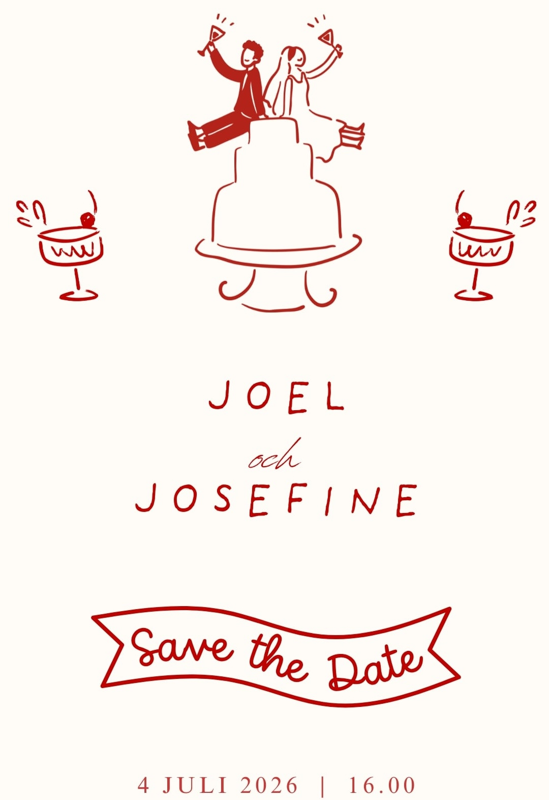
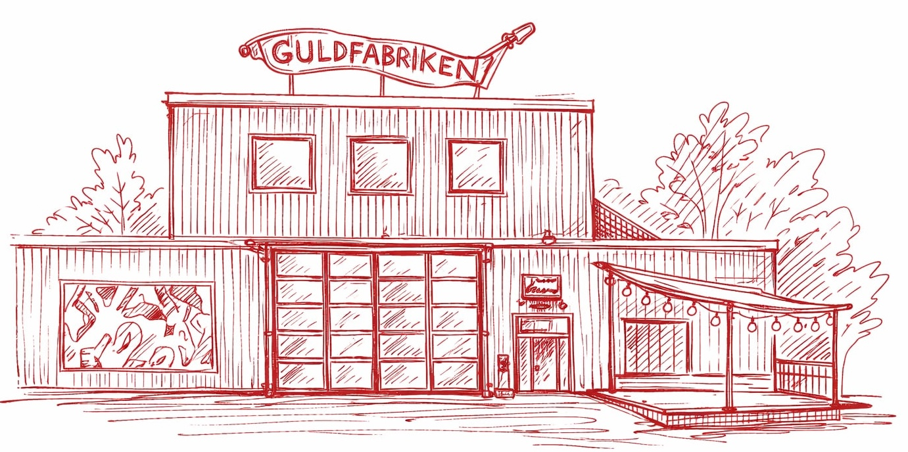

Vi ser så mycket fram emot att fira tillsammans med er! För er som har möjlighet att komma redan på fredagen ser vi fram emot att tjuvstarta firandet tillsammans på Årstabo i Årsta.
Fredag
- 17:00 Mingel på Årstabo (tryck här för karta) i Årsta med drop-in.
- 18:00 Korv med bröd serveras.
- 22:00 Kvällen avslutas senast.
Om några korvar med bröd inte mättar magen är det klokast att äta middag innan ni kommer eller efteråt. Vi avslutar kvällen senast kl. 22.00, men det är givetvis helt okej att smita iväg tidigare för att äta middag på egen hand.
Lördag
- 13:20 Vigsel i Stadshuset (tryck här för karta)
- 13:30 Vi kommer ut från vigseln och blir jätteglada om ni vill vara där och fira med oss!
- 13:30–15:00 Bubbel och mingel i Stadshusparken.
- 15:00 Därefter tar sig alla till Guldfabriken (tryck här för karta) på egen hand. Våra bestmans och bridesmaids kommer att finnas på plats och visa vägen.
- 16:00 Välkomstskål på Guldfabriken. Om ni inte har möjlighet att komma till vigseln är ni varmt välkomna direkt hit.
- 18:00 Middag.
- 21:00 Fest!
Ta dig dit
Guldfabriken ligger i Årsta och nås enkelt med kollektivtrafik från centrala Stockholm. Från Gullmarsplan tar det cirka 10 minuter med buss 144 mot Älvsjö station eller cirka 20 minuter till fots.
Boende
Det är enkelt att ta taxi eller kollektivtrafik till Södermalm, där det finns gott om boenden i olika prisklasser. Några förslag:
- Scandic Malmen – centralt och prisvärt vid Medborgarplatsen.
- Hotel Rival – ett elegant boutiquehotell vid Mariatorget.
- Clarion Hotel Stockholm – modernt och bekvämt med bra kommunikationer.
- Mosebacke Hostel – ett enklare och budgetvänligt alternativ.
Klädkod
Sommarfin.
Barn
Vi önskar en barnfri tillställning. Tack för er förståelse!
Tal
Vill du hålla tal? Kontakta Christian (sjostrand.ch@gmail.com) eller Andrea (calais.andrea@gmail.com).
Kuvertavgift
Vi ber om ett bidrag till middagen om 500 kr per person. Inbetalning sker senast den 25 maj via swish till 0735019064. Kom ihåg att märka betalningen med namn.
Presenter
Att ni deltar är nog med present för oss ❤